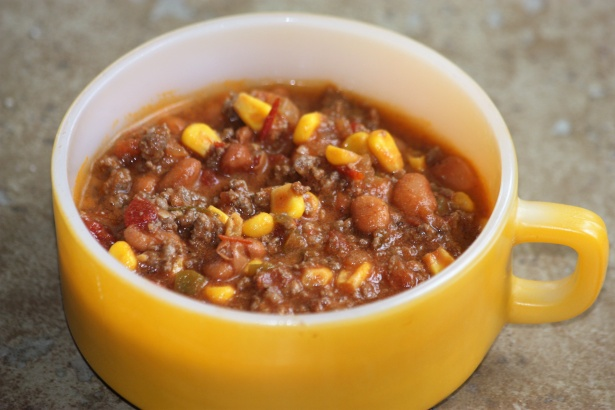

Taco soup

This easy Taco Soup recipe is one of my favorite meals when I want something healthy, quick, and tasty. This one-pot meal can also be made in the Crock Pot or Instant Pot.
Ingredients
- 2 (10 ounce) cans diced tomatoes with green chiles, undrained
- 1 (16 ounce) can chili beans
- 1 (15 ounce) can black beans
- 1 (15 ounce) can whole kernel corn, drained
- 1 (12 fluid ounce) can or bottle beer
- 1 (8 ounce) can tomato sauce
- 1 onion, chopped
- 1 (1.25 ounce) package taco seasoning
- 3 whole skinless, boneless chicken breasts
- 1 (8 ounce) package shredded Cheddar cheese (Optional)
- 1 (8 ounce) container sour cream
- 1 cup crushed tortilla chips
Steps
- Place diced tomatoes, chili beans, black beans, corn, beer, tomato sauce, and onion into a slow cooker. Add taco seasoning; stir to blend.
- Lay chicken breasts on top, pressing down slightly until just covered.
- Cover and cook on Low for 5 hours.
- Transfer chicken breasts to a chopping board and allow to cool long enough to be handled; shred chicken with two forks and add back into soup.
- Cover and continue cooking for 2 hours.
- Serve in bowls topped with shredded Cheddar cheese, a dollop of sour cream, and crushed tortilla chips.
Home